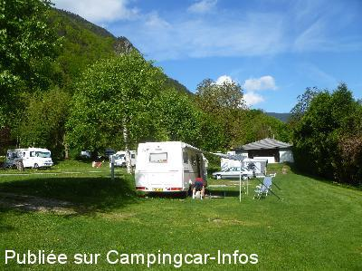
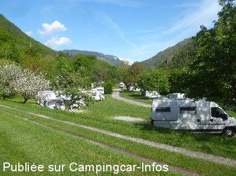

AC = Camping acceptant les camping-cars de :
BRIDES LES BAINS
(N° 804)
Accès/adresse :
Avenue du Comte Greyfié de Bellecombe
Camping La Piat **
73570 BRIDES LES BAINS
Camping La Piat **
73570 BRIDES LES BAINS
Latitude : (Nord) 45.45324° Décimaux ou 45° 27′ 11′′
Longitude : (Est) 6.56227° Décimaux ou 6° 33′ 44′′
Tarif : 2015
C-C, 2 personnes : 10,10 à 12 €
Personne + 12 ans : 3,10 à 3,50 €
Enfant 4 à 12 ans : 1,70 à 2 €
Électricité : 2,50 à 4 €
Animal : 1 €
Taxe de séjour : 0,22 €
Wifi : 23 € / 7 jours
Type de borne : Artisanale
Services :


Accès handicapés
Lave-linge
Sèche-linge
Autres informations :
Ouvert du 15/04 au 15/10
80 emplacements, ombragés.
Tel. : +33 (0) 479 552 274
http://www.camping-brideslesbains.com
contact@camping-brideslesbains.com

Le 06/05/2015 par DUBOIS

Le 06/05/2015 par DUBOIS
de
DUBOIS Patrick
le 06/05/2015 :
Camping très calme,très bien entretenu, accueil très agréable, emplacements bien répartis et de bonne superficie, environnement superbe. Idéal pour curistes avec tarifs adaptés et établissement thermal à 6mn à pied... Camping car de passage acceptés, possibilité de vidange des eaux usées et remplissage eau propre ( borne artisanale ) s'adresser à la propriétaire.
Camping très calme,très bien entretenu, accueil très agréable, emplacements bien répartis et de bonne superficie, environnement superbe. Idéal pour curistes avec tarifs adaptés et établissement thermal à 6mn à pied... Camping car de passage acceptés, possibilité de vidange des eaux usées et remplissage eau propre ( borne artisanale ) s'adresser à la propriétaire.
de
le 24/08/2002 :
Avec l'aimable autorisation de Mme Sylvie Barral, propriétaire : camping privé très calme. Accueil parfait. Services artisanaux très pratiques. Point de vue magnifique. Camping-Cars de passage acceptés pour les services uniquement, il convient de prendre contact avec la propriétaire du camping avant de se servir.
Avec l'aimable autorisation de Mme Sylvie Barral, propriétaire : camping privé très calme. Accueil parfait. Services artisanaux très pratiques. Point de vue magnifique. Camping-Cars de passage acceptés pour les services uniquement, il convient de prendre contact avec la propriétaire du camping avant de se servir.